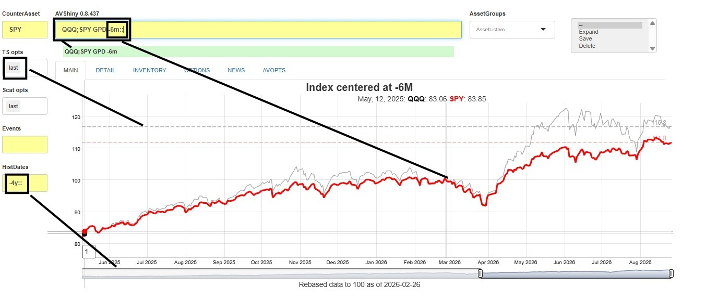
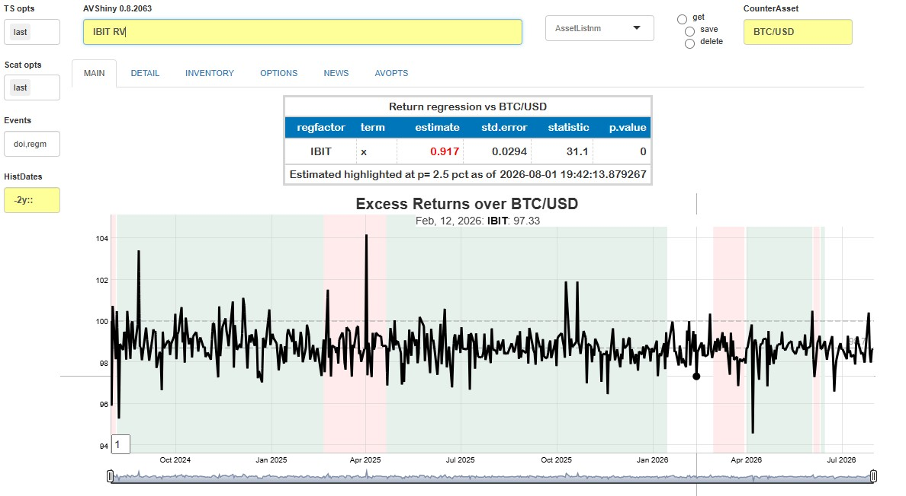

ShinyApp_1_setup_and_usage
Source:vignettes/ShinyApp_1_setup_and_usage.Rmd
ShinyApp_1_setup_and_usage.RmdThe Alphavantagepf package contains a Shiny Application which can be used to query, save, and visualize basic market information without having to navigate the asset-specific functions provided by the Alphavantage API. The app provides an intuitive way to compare small baskets of assets both technically and fundamentally.
This vignette will first go through some overall design goals and conventions before providing an overview of how to start and configure the application. Once the basic configuration is set, we then show how to get results (and what happens underneath the hood), what can be done, and how to maximize productivity with list management and function recall features.
Overall design goals and conventions
The app is designed to
- Integrate four main asset classes into an efficient and extendible analyses. For example, an equity, an index and FX exchange rate can all be graphed together.
- Minimize the amount of price information downloaded by caching (to the degree possible) older price data.
- Provide interfaces for capturing any data requested and adding external data to the internal cache.
- Provide easy ways to create and retrieve baskets of assets.
- Use modern design elements as much as possible, in particular the gt package and the dygraphs package. The latter is used via a “sister” package FinanceGraphs
- Provide a framework for adding user-generated analyses.
A few conventions which are helpful to know before using the app are1
| Item | Convention | Example |
|---|---|---|
| Asset Sets | Semicolon ; delimited tickers |
"IBM;NDX;USD/MXN" |
| Relative Dates | (Signed) integers followed by [m|d|y],
relative to today |
"-4m" |
| Date Ranges | Relative dates separated by "::"
|
"-4m::", "-1y::+1y"
|
“Assets” can be any (common) symbol for an Equity, ETF, Currency (in
the usual form of an alphabetic string of the form
(countercurrency / currency), cryptocurrency2, index, or
user defined time series.
App invocation and initial setup.
The app requires a very modest amount of setup before using. It can be run with
When av_runShiny()
is first run, the following screen will be shown, with the AVOPTS tab
selected. The first order of business will be to set the Alphavantage
API keys and (optionally) set data directories. To do so, just type or
copy in both your API key and your entitlement status
(delayed or realtime), and hit the blue Set Opts
button.

When the Set Opts button is pressed, a table of internal state variables is shown, with any changes highlighted. There are several options which can be set, all described in the Options Vignette, but one in particular is worth changing up front.
The app fills in a default data cache location determined by
[tools::R_user_dir()]. Since that directory is a cache directory
typically buried in long paths, you may find it helpful to set an
alternative location in the Cache Data Directory field as
has been done above. This will provide a consistent and easily
accessable portal between the data used by the app and any external
analyses or data collection mechanisms already in place.
After the first invocation, the app will start on the INVENTORY tab, so a user can immediately see what’s been updated and search for tickers.
General Usage
Analyses are all done by invoking “functions” or commands on a set of
assets in the yellow line shown above. As described in the README file,
commands which start with AV. are asset-less commands and
mostly oriented towards app-specific information such as data
inventories or help pages. All other commands refer to the semi-colon
delimited asset or ticker list given first.
Once you know what you want, just type it in and hit “Enter”. The
command will get any data it needs and then produce a set of tables,
time series graphs, or other plots. See Data
Vignette for details as to how this done. Most commands require a
timeframe of historical data to analyze. The date range (formatted as
above) in HistDates is used, but other date ranges within
that range may be added as parameters.
The app responds as follows:
Most results will appear in the MAIN tab, but some results may appear in function specific tabs. For example, the OPTIONS tab has specific fields to search for Equity options, and the NEWS tab has specific fields to narrow search results. Note that there is also a separate INVENTORY tab to always have a searchable ticker list available.
By design, time series graphs are shown first, followed by tables and then
ggplots. THe app allows for two independent time series graphs to be shown on top of each other. The second graph is typically made by adding a “2” onto the end of the command.Some commands may produce some auxiliary information in a separate tab. That tab is typically called DETAIL but can change names to highlight existence of results in the tab.
Feedback (i.e.an error message) is placed below the command line, but can appear elsewhere. Progress messages will show in the R Console 3
Examples
You might want to start with AV.H which describes all
the commands available. Some examples of commands that can be run
are
| Command | Description |
|---|---|
EEM;HEEM GP |
Graph raw time series of the EEM ETF and
it’s hedged counterpart. |
QQQ;SPY GPI2 |
Graph time series of QQQ and
SPY rebased to 100 at start below the first graph. |
QQQ;SPY GPD -6m:: |
Graph total return indices of the two ETFs rebased to 100 as of 6 months ago |
IBM;ORCL EA |
Table of earnings and estimates for IBM
and ORCL
|
IBM;ORCL GEP |
Graph Earnings Yield for IBM and
ORCL
|
IBM;ORCL CN |
Table of linked News items for IBM and
ORCL
|
IBM;ORCL DES |
Table of descriptive items for IBM and
ORCL
|
ORCL OS |
Table of options for ORCL
|
ORCL RV |
Active returns and correlations with the counterasset
(default is SPY) |
AV.EQINV |
Show a list of all ETFs and Equities with downloaded data |
To see how the date conventions work, the results of the third
command are shown below. Note that there is a slider (provided by
dygraphs()) which allows you to zoom in or out to specific
time windows. In this case, the graph starts at -6m::,
where both indices are rebased to 100, but can be zoomed out to a
maximum of 4 years (HistDates has -4y::) from
today. Finally, the last option in TSopts puts
a horizontal bar showing the last values of each series.

Here is another example which highlights both the comprehensive
abilities to combine assets in the app with graphing abilities. Suppose
we wish to plot the fair value history of the crypto ETF
IBIT, and add some visual indication of overall market
direction. Editing the counterasset to BTC/USD adding
doi:regm in Events, and running IBIT RV gives
the following.

Asset Lists
Securities are seldom analyzed in isolation. It is easy to create and use ad-hoc groups of securities in this app.
To create a list, First, type in a new name for the list in the
AssetListnmlist box as shown below. Hit “enter” to add the name to the set of asset lists already in existence. (The Enter is necessary for Shiny to know that it’s a new identifier.) Then either type in the components into the Command line, or use the assets already in the asset line. Remenber lists are semi-colon delimited. Then hit the set button to save the list.To get the assets in a list, select the desired list from the dropdown and hit get button. The app will replace whatever assets you have in the command line with those from the desired list, leaving the command in place.
The best way to see how this works is with a short clip:

You can see a table of current asset lists by running the
AV.INV command, and can add asset lists outside of the app
using av_add_assetgroups().
See Data
Vignette for details.
Specific command notes
Options Search
To find options for a given set of tickers use the command
OS, which will take you to the OPTIONS tab.
A few fields on that page which will help narrow down the options
are:
| Field | Detail |
|---|---|
| Chains | Comma delimited string of four items to narrow downloaded options. |
1. [F|B] first contract or second
contract |
|
2. [M|Q] Monthly expiration or Quarterly
expiration |
|
3. [C|P|A] Calls, Puts or Both |
|
4. [itm|otm|all] In or out of the money4
|
|
| Mindelta | Minimum absolute delta of option |
| Output | Subset of columns to show, relevant to Trading or Valuation |
| Scaling | Values and Greeks for 10 contracts or 10kUSD premium |
The options change can be overridden as parameters to the
OS call, as seen below. WIthout the parameters added on the
command line, calls would have been returned.
 # Interacting
with the app from the command line.
# Interacting
with the app from the command line.
A great and recent innovation in shiny() is the ability
to run an app and return to the console. The internal data can be
accessed in one of three ways:
- Directly by reading or writing to the files enumerated in Data Vignette
- One
av_runShiny()has been run (which loads its data), using functions such asav_load_shinydata("pxd") - Even before
av_runShiny()has been run, call toav_load_shinydata()and then via functions such asav_load_shinydata("pxd")
In addition, internal states and data can be extracted via functions such as dump_state().